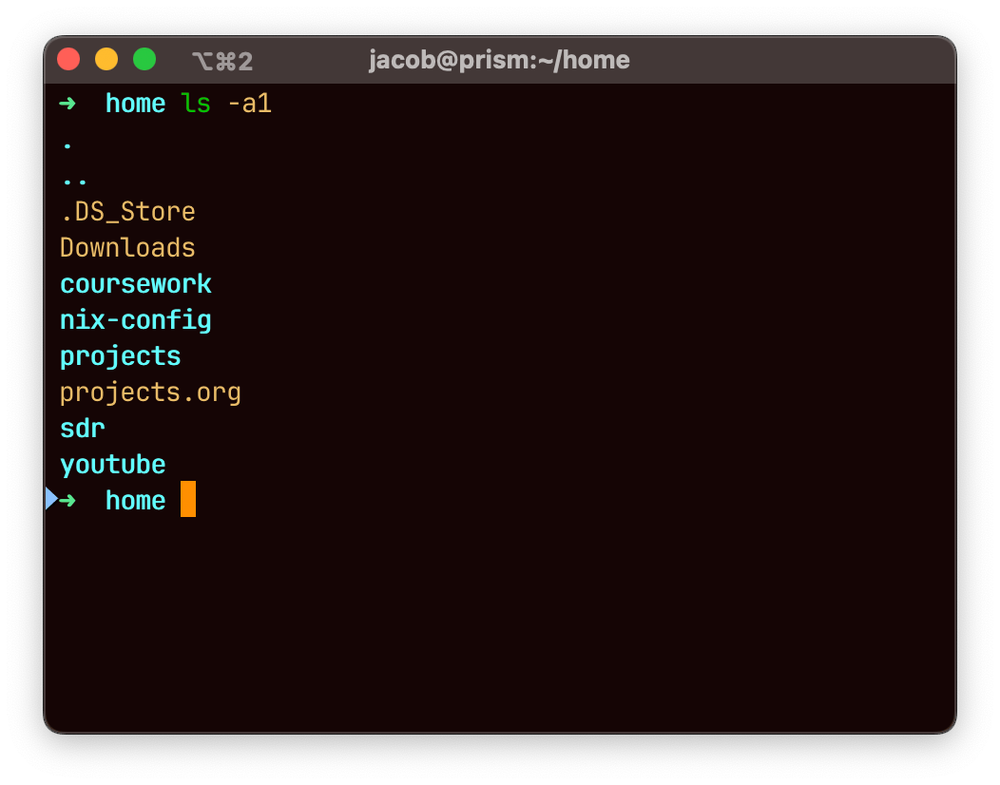
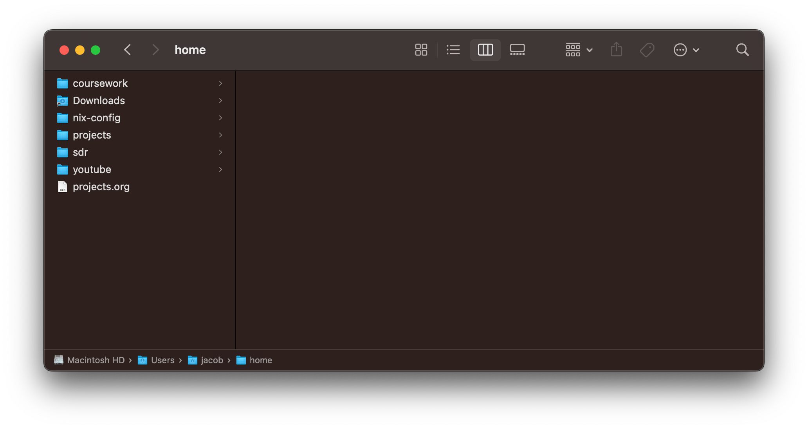

A Solution for the Cleanest MacOS Home Folder
Posted on September 30, 2025
I hate the home folder on MacOS. I don’t need most of the folders created for me, and it’s not safe to get rid of them. Furthermore, third-party applications have no consistent location to place their files. Some put files in the home folder, others in Documents.
I came up with a solution so simple I can’t believe I hadn’t thought of it earlier. A friend of mine liked it so much he adopted it as well. Here it is.
Make a new home directory
My simple solution to the clutter is to create a new home directory inside the default home directory. I called mine home. Then, configure the finder option: New Finder windows show and select that new folder. Finally, throw in a quick snippet to your shell so that new shells start in that directory.
Then, you can forget about all those extra folders and just focus on what you want. I’ve gone so far as to hide the sidebar. Enable the bottom breadcrumbs so you can access the home folder when needed, or simply use the keyboard shortcuts.
This solution, combined with nix-darwin, has allowed me to create an extremely clean, reproducible, and comprehensible system — I know what’s on my machine and can manage it appropriately. I don’t need to see the cluttered mess of dotfiles because they are all consolidated in my Nix configuration, and whatever applications want to throw in my home folder, so be it.
